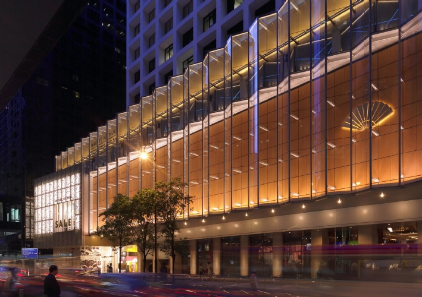
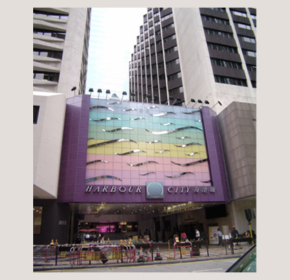
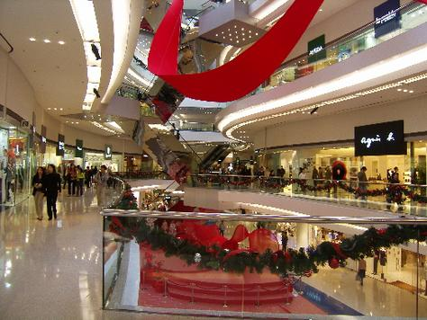
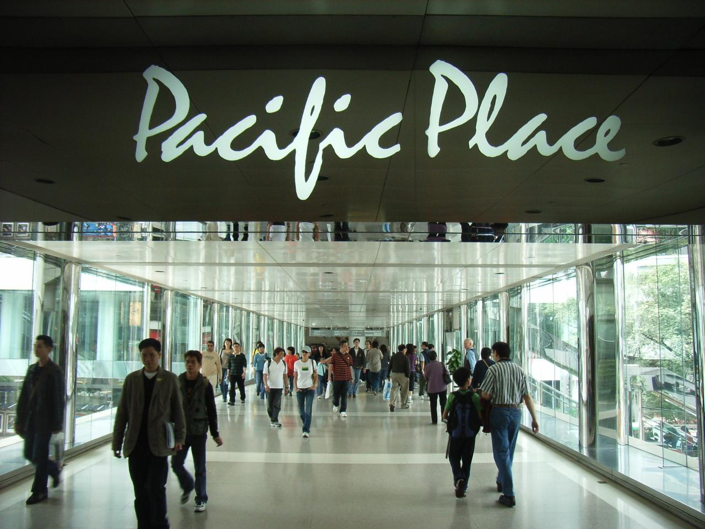

Time square
One of Hong Kong's busiest malls, and also one of the most iconic. Inspired by Times Square New York, Times Square is where Hong Kong ushers in the New Year and is at the heart of Causeway Bay, one of Hong Kong's prime shopping spots. The shops inside are mostly mainstream mix of European, American and Japanese stores. The mall also has a fantastic slate of restaurants, some of the best in the city, as well as a cinema complex.

The Landmark
The high altar of Hong Kong shopping, The Landmark features Hong Kong's most exclusive shops, and sheikest boutiques. From the milestone Luis Vutton shop, to Hong Kong's only Harvey Nichols. While the mall has the best shops, it also attracts the highest pricetags. Slap-bang in the middle of Central, it also features the Landmark Oriental Hotel, with a battery of first-class restaurants.
{kind=link}
Harbour City
The city's biggest mall, Harbour City is gargantuan, at over three kilometres long the mall boasts nearly 800 shops. The shops are a fairly standard selection, albeit an endless one of international and national brands. The complex has two separate cinemas, and restaurants covering nearly every cuisine in the world. Be sure to pick-up one of their in-house maps, as the warren of shops is easy to get lost in.
{kind=link}
Festival Walk
One of Hong Kong's more off-beat malls, Festival Walk has been beautifully designed according to Feng Shui principles and its curves and water features make for a fantastic space. Inside are around 200 shops, including both mainstream and one-off shops. Its position, at the interchange between the subway and regional rail keeps its many restaurants and top-notch cinema busy.
{kind=link}
Pacific Place
One of Hong Kong's swankiest malls, Pacific Place is palatial, and more reminiscent of a hotel than a shopping mall. Set over three levels, the top floors feature swank boutiques and designer shops, while the lower levels feature more ordinary shops. The mall is connected to the relaxing Hong Kong Park, and boasts three of Hong Kong's most upmarket hotels, as well as a cinema and a number of restaurants.
{kind=link}
Source:http://www.hong-kong-hotels.ws/shopping/wheretobuy.htm